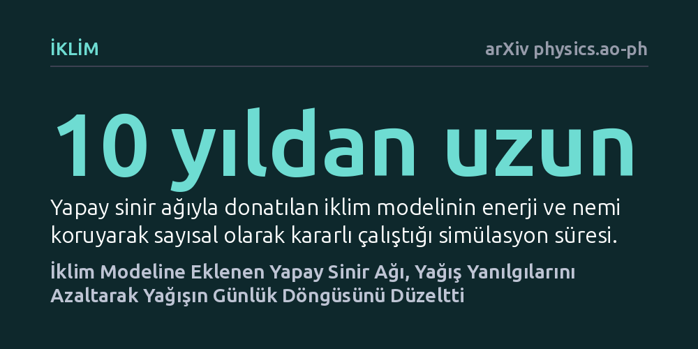

IKLIM · arXiv physics.ao-ph · 2026-10-16
Araştırmacılar, küresel bir iklim modelindeki geleneksel konveksiyon şemasını yüksek çözünürlüklü fırtına verileriyle eğitilmiş derin bir yapay sinir ağıyla değiştirdi. Bu hibrit model enerji ve nemi koruyarak on yıldan uzun süre kararlı çalıştı; hafif, aşırı ve günlük yağışlardaki köklü hataları belirgin şekilde azalttı.
Yapay zekanın iklim modellerinde fizik kurallarını bozmadan uzun yıllar kararlı çalışabileceğini ve on yıllardır çözülemeyen yağış tahmin hatalarını giderebileceğini gösteriyor.

Dünya genelinde iklim değişikliğinin geleceğini öngörmek için kullanılan küresel iklim modelleri, atmosferi yüzlerce kilometrelik hayali kutulara bölerek hesaplama yapar. Ancak fırtınalar, dikey hava hareketleri ve konveksiyonel bulutlar bu kutulardan çok daha küçük ölçeklerde meydana gelir. Bu yüzden modeller bu süreçleri doğrudan çözmek yerine "parametrizasyon" adı verilen basitleştirilmiş fiziksel varsayımlarla yaklaşık olarak tahmin eder.
Ne var ki geleneksel derin konveksiyon şemaları—özellikle yaygın kullanılan Zhang-McFarlane şeması—onlarca yıldır iklim modellerindeki belirsizliklerin ve sistematik yanılgıların başlıca kaynağı olmayı sürdürüyor. Bu şemalar nedeniyle modeller gerçekte gözlemlenenden çok daha sık hafif yağmur yağdırıyor, aşırı fırtınaları yakalamakta zorlanıyor ve tropik bölgelerdeki yağışları öğleden sonra yerine hatalı bir şekilde gün ortasında başlatıyor. Bu hata zinciri, gelecekteki kuraklık ve sel tahminlerinin güvenilirliğini doğrudan gölgeliyor.
Bilim insanları uzun süredir bu eksikliği gidermek için yüksek çözünürlüklü fırtına modellerine başvurmak istese de, bu simülasyonları küresel ölçekte yüzyıllar boyunca çalıştırmak günümüzün en güçlü süper bilgisayarları için bile imkansız derecede maliyetlidir. Bu engeli aşmak isteyen araştırmacılar, veriye dayalı yapay zeka ile geleneksel fizik modellerini birleştiren hibrit bir yaklaşım geliştirdi.
Ekip, fırtına ölçeğindeki süreçleri doğrudan çözen küresel bir model olan gSAM simülasyonunun verilerini kullandı. Bu verileri kaba ölçeklendirerek, standart iklim modellerinin çözünürlük altı konvektif akılarını ve eğilimlerini hesapladılar ve bu dinamikleri taklit etmesi için tam bağlantılı derin bir yapay sinir ağı eğittiler.
Eğitilen bu yapay sinir ağı, Topluluk Atmosfer Modeli'nin (CAM6) içerisine yerleştirildi. Kritik nokta şuydu: Yapay zeka yalnızca geleneksel Zhang-McFarlane derin konveksiyon şemasının yerini aldı; radyasyon, türbülans ve diğer bulut süreçleri gibi diğer temel fiziksel bileşenler orijinal haliyle korundu ve hiçbir parametre yeniden ayarlanmadı.
Makine öğrenimini iklim modellerine entegre etmeye yönelik önceki denemelerin en büyük açmazı, sayısal kararsızlıktı; yapay zeka bileşenleri simülasyonun birkaç gün veya ay içinde çökmesine ya da enerji ve nemi yok ederek fiziksel tutarsızlığa yol açmasına neden oluyordu. Ancak bu çalışmada geliştirilen hibrit model, on yıldan uzun bir simülasyon süresi boyunca hiçbir kararsızlık yaşamadan, enerji ve nem korunumunu eksiksiz sürdürerek çalıştı.
Dahası, yapay zekanın devraldığı yeni sistem, iklim modellemesindeki en köklü yanılgıları belirgin biçimde düzeltti. Varsayılan modele kıyasla, aşırı sık görülen yapay çisenti (hafif yağış) hatası ciddi oranda azaldı ve aşırı yağışların şiddeti gerçek gözlemlere çok daha yaklaştı.
En dikkat çekici düzelmelerden biri de tropik kara alanlarındaki yağışların günlük döngüsünde görüldü. Geleneksel modeller tropik yağışları gerçeğe aykırı biçimde gün ortasında zirveye çıkarırken, yeni yapay zeka destekli model bu zirveyi doğada fiilen gözlemlenen geç öğleden sonra vaktine kaydırmayı başardı.
Elde edilen sonuçlar, tüm iklim modelini baştan aşağı bir kara kutu yapay zekaya devretmek yerine, sadece en belirsiz alt süreçlerin hedeflenerek yapay zeka ile değiştirilmesinin uygulanabilir ve güvenilir bir yol sunduğunu kanıtlıyor. Bu hibrit yapı, fiziksel yasaların gerektirdiği temel korunum ilkelerini korurken, yüksek çözünürlüklü fırtına modellerinin getirdiği doğruluğu düşük maliyetle standart modellere taşıyor.
Yine de bu çalışmanın henüz bağımsız hakem heyetinden geçmemiş bir önbaskı olduğunu ve yalnızca tek bir atmosfer modeli üzerinde test edildiğini unutmamak gerekir. Sistemin farklı iklim koşullarında ve küresel ısınma senaryoları altındaki davranışının doğrulanması, gelecek nesil iklim projeksiyonlarında kullanılabilirliği açısından belirleyici olacaktır.